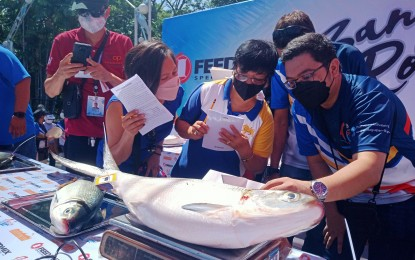
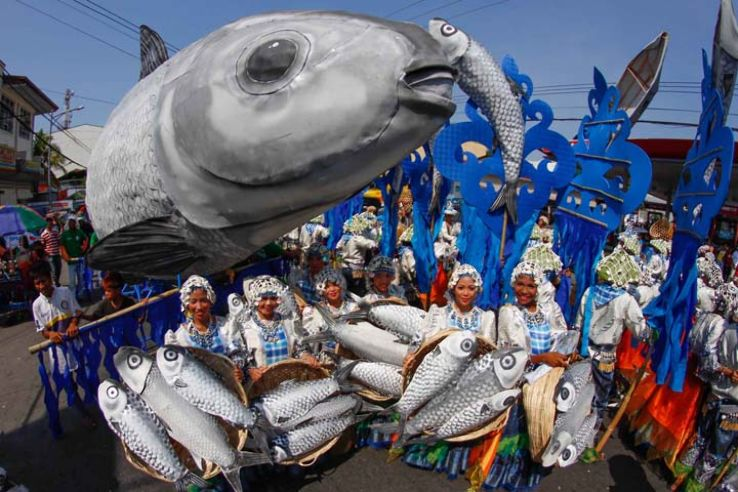

The Bangus Festival is an annual cultural celebration held in Dagupan City, Philippines, honoring the city’s thriving milkfish (“bangus”) industry. It showcases the significance of bangus to the local economy and identity through culinary, cultural, and festive events that draw both domestic and international visitors.
Fun Facts
- Hosts the famous “Kalutan ed Dalan” (street grilling) event.
- Thousands of bangus are grilled at once.
- Celebrated every April.
Historical Background
Initiated in 2002 by the local government, the Bangus Festival was conceived to promote Dagupan’s reputation as the “Bangus Capital of the World.” It aims to celebrate the livelihood of local fish farmers and reinforce civic pride, while simultaneously boosting tourism and the regional economy.
Major Events and Activities
The festival’s centerpiece is the Bangusan Street Party, often featuring the world’s longest bangus grill, where thousands of fish are cooked simultaneously. Other events include a bangus culinary competition, street dancing parades, float processions, trade fairs, and beauty pageants highlighting Pangasinan culture and artistry.
Cultural and Economic Significance

Bangus is central to Dagupan’s identity and a symbol of abundance and hospitality in the Philippines. The festival fosters community participation, supports small-scale aquaculture, and strengthens the city’s image as a premier destination for food and cultural tourism.
Recent Developments

In recent years, the Bangus Festival has incorporated modern themes such as sustainability and digital promotion, while retaining its traditional charm. After pandemic-related pauses, it has resumed as a major summer celebration that attracts thousands of visitors to the city each year.
During one festival, locals grilled so many bangus along the streets that the aroma filled the entire city, creating what residents proudly called “the smokiest and happiest day in Dagupan.”